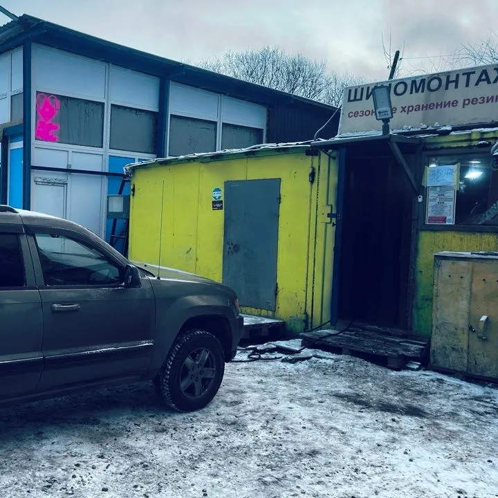
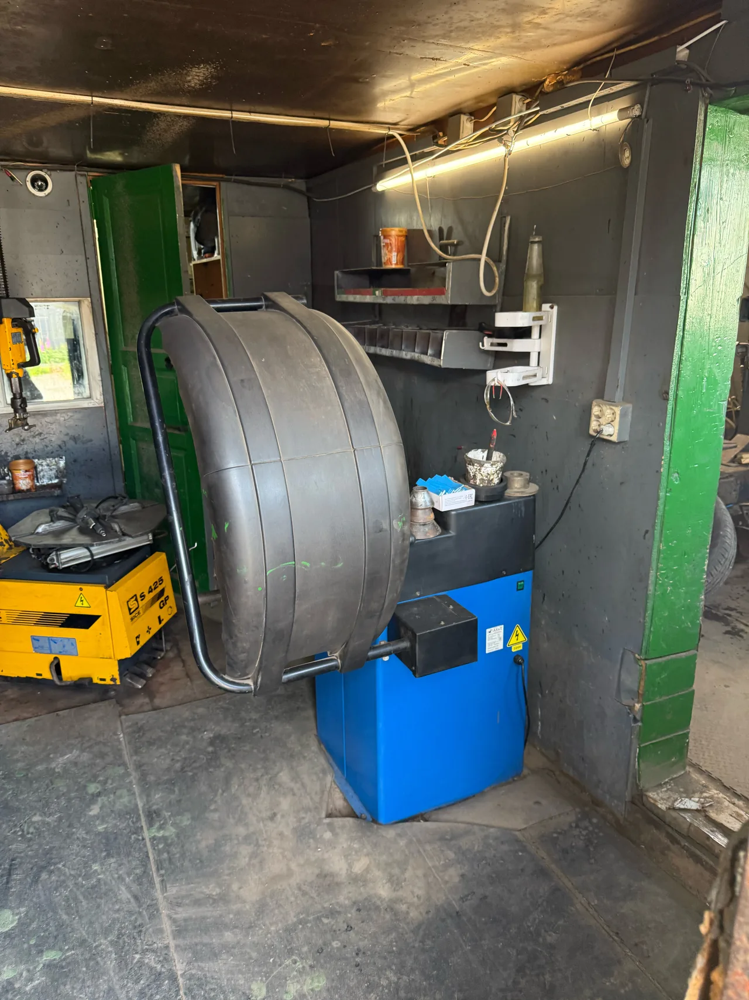
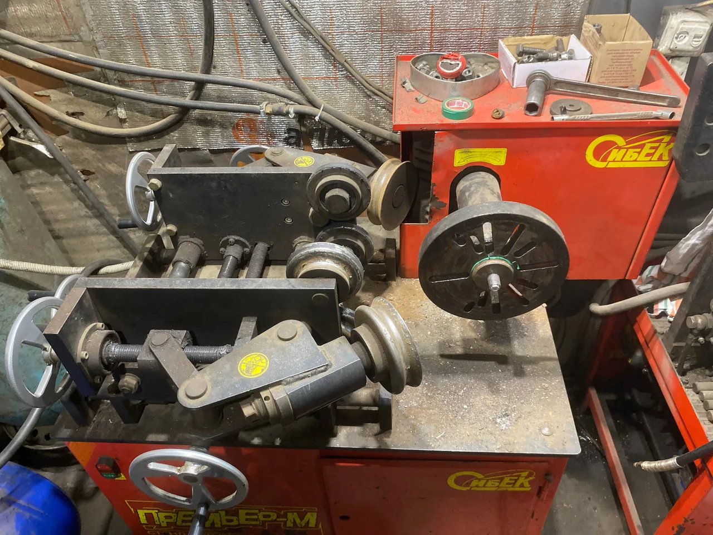

Шиномонтаж · Мурманск
Круглосуточный шиномонтаж на Генералова
Ремонт проколов, сезонная замена и хранение шин в Мурманске.
Позвонить- Круглосуточно
- Хранение шин
- Оплата картой

Услуги
Стоимость выбранной работы уточняйте у мастерской.
- Ремонт проколауточнить
- Сезонная замена шинуточнить
- Хранение шинуточнить
Как обратиться в мастерскую
- 01
Выберите услугу
Укажите, какую работу нужно выполнить.
- 02
Уточните время
В карточке мастерской доступны способы связи.
- 03
Постройте маршрут
Откройте адрес в Яндекс Картах перед поездкой.


Отзывы с Яндекс.Карт
«поставили латку на прокол, зачистили, проклеили, отбалансировали»
Отзыв на Яндекс Картах · 25 июля 2025
«все быстро отремонтировали и качественно»
Отзыв на Яндекс Картах · 9 ноября 2026
«починили прокол быстро и не дорого»
Отзыв на Яндекс Картах · 18 ноября 2026
Отзывы с карточки на Яндекс.Картах, без правок.
Частые вопросы
Как уточнить стоимость и время?
Сообщите мастерской, какая услуга нужна. Для замены шин укажите тип автомобиля и размер колёс.
Где найти адрес и график?
Актуальные сведения и маршрут доступны в карточке на Яндекс Картах.
Контакты и маршрут
- График
- ежедневно, круглосуточно
- Связь
- ВКонтакте · в карточке мастерской